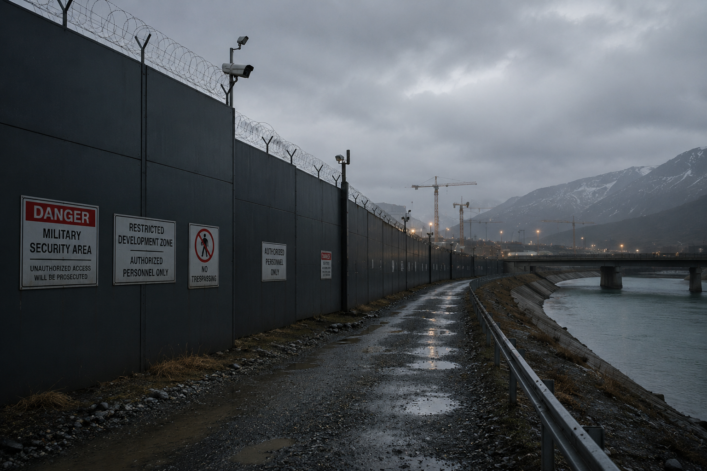
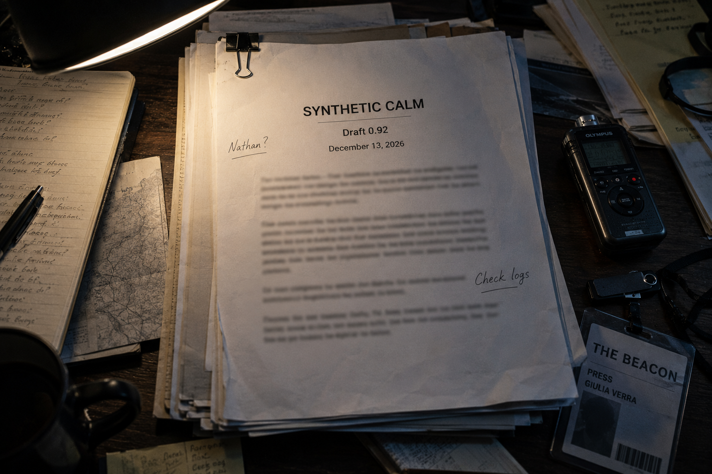

Veyra Construction · Investigation · 2023
Where Did They Go?
Questions surrounding missing construction workers at the Veyra development site.
VEYRA
Independent Journalism Since 1993

Veyra Construction · Investigation · 2023
Questions surrounding missing construction workers at the Veyra development site.

Veyra Files · 2024
Monitoring systems, access badges and digital governance in Veyra.

Veyra Files · 2025
Unidentified security teams operating around restricted areas.

Education · 2026
Closure of a rural school and migration of local families.
